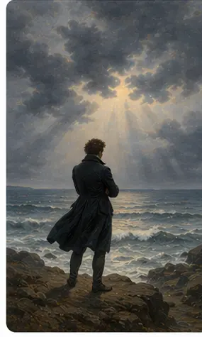

Il meccanicismo e le illusioni necessarie
Alla base del pensiero di Foscolo vi è una visione meccanicista e materialistica dell’universo. Tuttavia, questa consapevolezza razionale genera nell’uomo un dolore profondo, che solo le “illusioni necessarie” possono lenire e rendere sopportabile.

1. La visione meccanicista del mondo
Il meccanicismo, affermatosi tra il Seicento e il Settecento, concepisce l’universo come una macchina regolata da leggi fisiche eterne e impersonali. Tutto è materia in movimento, soggetta al nesso di causa ed effetto.
2. Le conseguenze radicali di questa visione
Da questa concezione derivano per Foscolo alcune conseguenze fondamentali:
- Negazione dell’anima: l’uomo è pura materia; l’anima non esiste come entità spirituale, ma è riducibile a processi fisico-chimici del cervello.
- Assenza di un aldilà: con la morte tutto si spegne; non esiste Dio, né provvidenza, né vita dopo la morte.
- Neutralità della natura: la natura non ha fini morali né si cura dell’uomo; è indifferente alla sua sorte.
- Angoscia del nulla: l’uomo, preso coscienza di questa verità, si scopre solo, destinato al nulla eterno. Nasce così il “dolore filosofico”.
3. La necessità delle illusioni
Per sopportare questa verità amara, Foscolo ritiene indispensabile che l’uomo crei illusioni: amore, patria, bellezza, poesia, memoria non sono verità oggettive, ma costruzioni della coscienza che danno senso alla vita. Sono “illusioni necessarie”, perché senza di esse la vita sarebbe insopportabile.
Non sono bugie, ma valori ideali che nobilitano l’animo e permettono una forma di eternità: solo ciò che la memoria e l’arte custodiscono può sfidare l’oblio.
4. Le illusioni come riscatto e dovere
Le illusioni non sono solo un rifugio personale, ma anche un dovere civile: attraverso di esse l’uomo può impegnarsi per la patria, per la libertà, per il bene comune. La poesia, in particolare, diventa strumento di salvezza: trasforma l’esperienza individuale in valore universale e lascia un segno destinato a durare nel tempo.
I concetti chiave
1. Meccanicismo
L’universo è una macchina regolata da leggi fisiche impersonali. Tutto è materia in movimento secondo cause ed effetti.
2. Verità del nulla
Non esiste Dio, né anima, né provvidenza, né vita dopo la morte. L’uomo è solo materia destinata a dissolversi.
3. Dolore filosofico
La presa di coscienza della verità del nulla provoca angoscia, sconforto, senso di solitudine e smarrimento.
4. Illusioni necessarie
Amore, patria, bellezza, poesia, memoria sono costruzioni della coscienza che danno senso alla vita e permettono una forma di eternità ideale.
5. Poesia e memoria
La poesia custodisce i valori più alti e li trasforma in parole destinate a durare: solo l’arte può opporsi al nulla e all’oblio.
“L’illusione è umana, e l’uomo senza illusioni è un nulla.” (Alla sera, vv. 13-14)